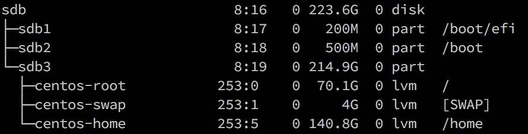

centos7.0安装配置，cuda,cudnn安装，anaconda安装，深度学习框架caffe,torch,theano,tensorflow安装
0.介绍
深度学习在linux上面会比windows上面方便很多，在windows上那叫个折腾。本文将会介绍centos7.0 的
安装，cuda和cudnn的安装，anaconda安装，以及各种深度学习框架的安装。
深度学习是计算密集型任务，不推荐在虚拟机中运行，装cuda和cudnn需要有nvidia显卡。
本文默认在root下运行所有命令
1. 安装系统
建议不要使用最小安装，否则很多工具需要自己再次安装比较麻烦。
分区：自己分区，选择硬盘(比如sdb), 分区表如下

选择了需要安装的软件后不停下一步就可以安装完毕。
安装完成后，添加源 yum install epel-release,这个源包含了很多base源没有的软件包，非常实用
2. 配置网络
centos 默认是没有联网的，如果系统没有安装图像界面如gnome或者kde等，需要在命令行配置如下
2.1 修改ip和网关
vim /etc/sysconfig/network-scripts/ifcfg-enp5s0 #enp5s0是网卡对应名称，使用`ifconfig`查看自己机器的网卡名称，然后修改对应文件
Copyright © 2015 Powered by MWeb, Theme used GitHub CSS.